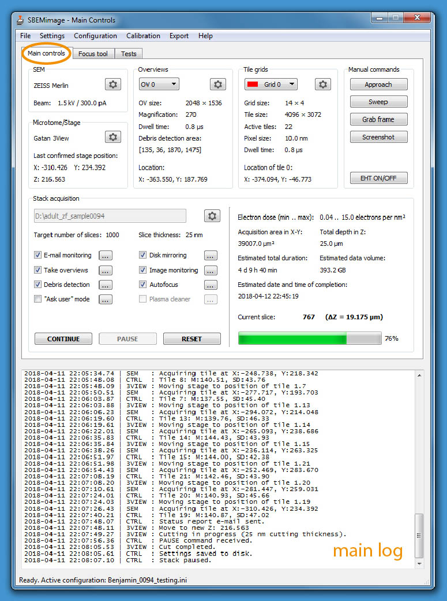
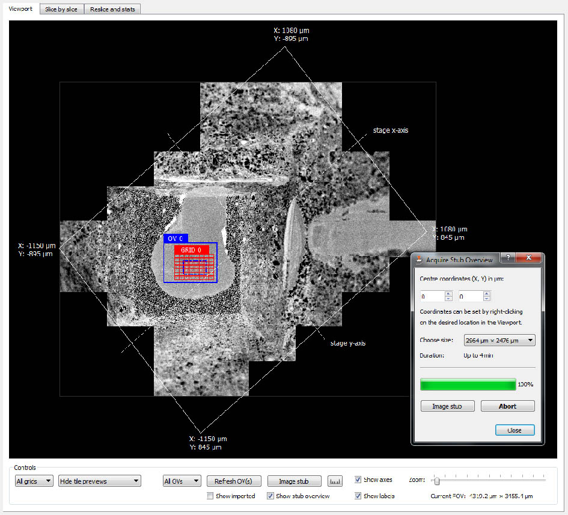
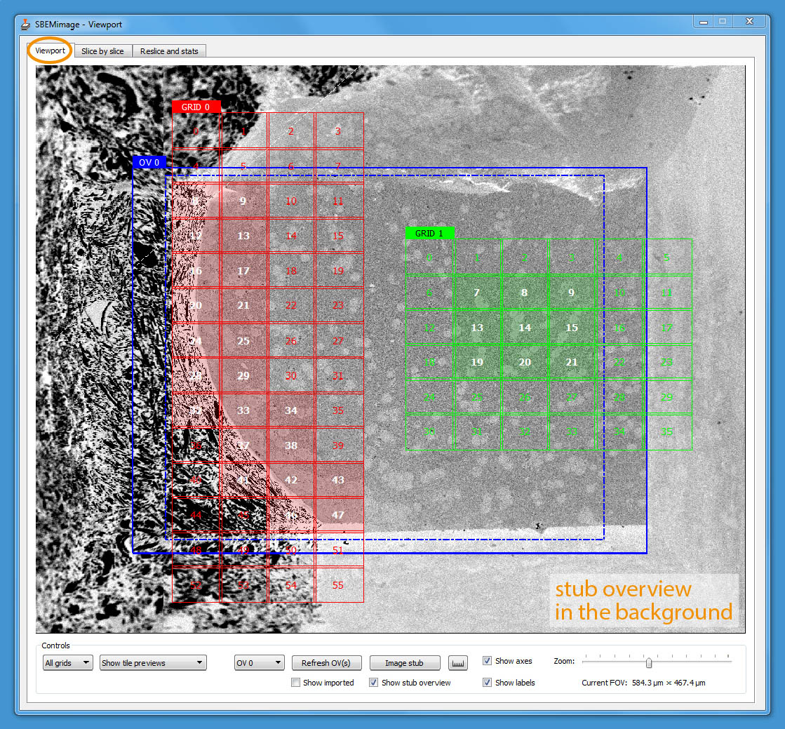
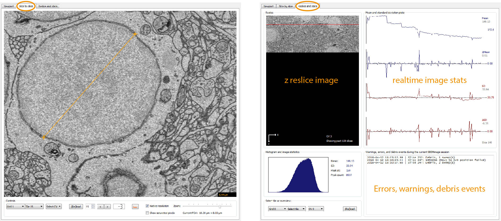

User interface
The graphical user interface consists of two windows (Main Controls and Viewport) that are by default displayed next to each other (Main Controls on the right). A screen of at least 1920 × 1080 is required to fully display both windows. The GUI was designed with remote desktop software such as TeamViewer and VNC in mind: All functions are accessible on a single screen.
Main Controls
The window Main Controls (shown below) displays at a glance all relevant settings, the acquisition status, the current electron dose, and real-time estimates for the duration of the acquisition and the total data size. Click on the buttons with a cogwheel icon to open dialog windows for changing settings (available for the panels “SEM”, “Microtome/Stage”, “Overviews”, “Tile grids” and “Stack acquisition”. Click on the tool option buttons (“…”) to change the settings for the different features (for example, debris detection) that can be activated during stack acquisitions. Two additional tabs contain a focus tool and various functions for testing and debugging.

Viewport
The workspace shown in the Viewport’s main tab covers the entire accessible range of the stage motors. When sufficiently zoomed out, the stage boundaries are shown as solid white lines, and the x and y stage axes as dashed white lines. To obtain an overview of the entire surface of the sample holder (‘stub’) mounted on the 3View stage, click on the button “Image stub”. A large low-resolution (372 nm pixel size) mosaic will be acquired and placed in the workspace as a background image (see screenshot below).

You can then use the stub overview image to locate the region of interest. In the region of interest, you can acquire a smaller overview image at higher resolution (typically 100-200 nm pixel size). Press the CTRL key and click on the blue rectangle “OV 0” and drag it to the position where you wish to acquire the overview image. To acquire image tiles at the target resolution for analysis (typically 5-20 nm pixel size), you can set up a tile grid in the region of interest. Grid size, tile size, overlaps/gaps between tiles, and acquisition parameters (frame size, pixel size, and dwell time) are specified for each grid. The default tile grid is “Grid 0”. By pressing the ALT key and clicking on a grid, you can drag it to a new position. Tiles can be individually selected or deselected for imaging (press SHIFT and click on a tile). For complex acquisition tasks, multiple overviews can be set up to cover the region(s) of interest, and multiple grids can be created with different imaging parameters. You can choose for each overview image and for each grid whether it should be acquired on every slice, or in intervals. This permits, for example, to image an area with alternating pixel sizes, or to acquire an overview stack at low resolution with a high-resolution mosaic on every tenth slice. The screenshot below shows an overview image (“OV 0”) and two tile grids (“GRID 0” and “GRID 1”). The highlighted tiles have been selected for imaging. A low-resolution stub overview mosaic is displayed in the background.

The basic elements described above are displayed in different layers inside the viewport. The background layer consists of the stub overview image, which provides the main reference frame for an acquisition. The next layer contains the overview images that cover the regions of interest. They are primarily used for debris detection and to position the tile grids. The tile grids are usually located above the overview images, but they can also be placed on any other part of the workspace within the accessible motor range. Finally, additional imported images are shown in the foreground. You can choose whether to show or hide elements by using the controls at the bottom of the window. The visual scene can be panned by left-click dragging, and zoomed in and out with the mouse wheel or the zoom slider in the bottom-right corner. The viewport is fully functional even while an acquisition is running.
Select the second and third tab to use the slice-by-slice viewer and to show reslices and statistics (see screenshots below; click to enlarge). In each tab, use the grid/tile selector on the bottom to choose the data source, then click on “(Re)load”. In the slice-by-slice viewer, click on the ruler icon to measure distances. When the button is activated (orange colour), mark the starting point for the measurement by clicking with the right mouse button. Mark the end point with a second right click. The distance is displayed in the bottom right corner. To deactivate the measurement function, click on the ruler icon again (colour changes back to black). The measurement tool works the same way in the viewport. In the “reslice and stats” tab, you can select a slice by left-clicking on the area where the plots are shown. The selected slice is marked with a vertical line in the plot area and a red line in the reslice. The histogram and the mean/SD values are shown for the selected slice.

Mouse and key commands
Use the following commands to navigate, zoom, select and move objects. For the Viewport and the Slice-by-Slice Viewer, you can show the list of commands in a pop-up panel by clicking on the button with the question mark.
Viewport
| Command | Action |
|---|---|
left click and drag |
Drag to pan field of view |
double click |
Zoom in at current position |
right click |
Open context menu (Tile selection, image import…) |
shift + left click |
Select or deselect single tiles |
shift + left click drag |
Select or deselect tiles in painting mode |
alt + left click drag |
Move grid to new position |
ctrl + left click drag |
Move overview image to new position |
ctrl + alt + left click drag |
Move imported image to new position |
mouse wheel ↑/↓ |
Zoom in and out (in vieweport panel); Forward and backward through image series (in slice-by-slice panel) |
Measuring tool |
Activate by clicking on measure button (ruler icon), then right-click on two different points between which you wish to measure the distance. |
Slice-by-Slice Viewer
| Command | Action |
|---|---|
left click and drag |
Drag to pan field of view |
mouse wheel ↑/↓ |
Zoom in and out (in vieweport panel); Forward and backward through image series (in slice-by-slice panel) |
Measuring tool |
Activate by clicking on measure button (ruler icon), then right-click on two different points between which y ou wish to measure the distance. |
Focus Tool
| Command | Action |
|---|---|
mouse wheel ↑/↓ |
Zoom in and out (in vieweport panel); Forward and backward through image series (in slice-by-slice panel) |
PgUp / PgDown |
|